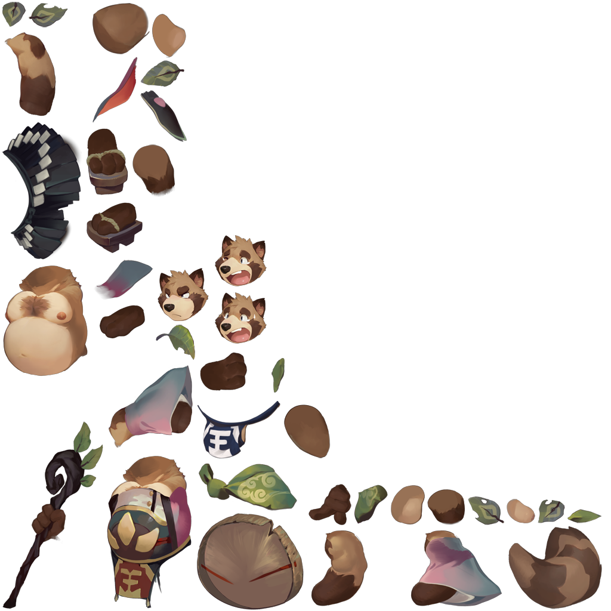
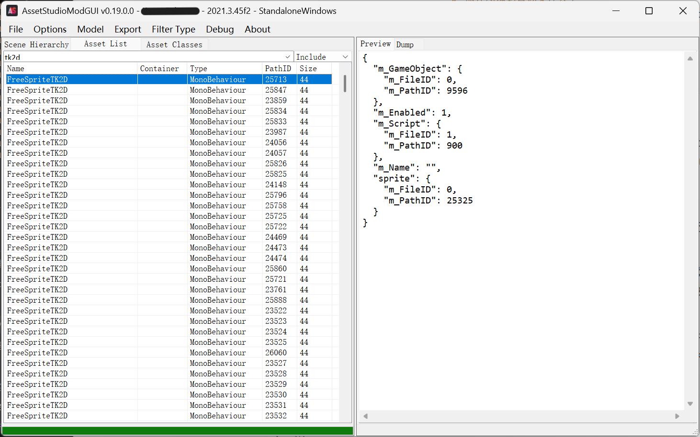
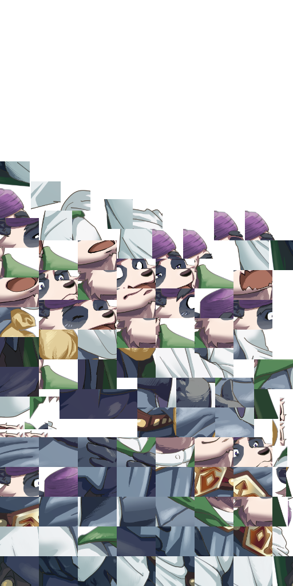
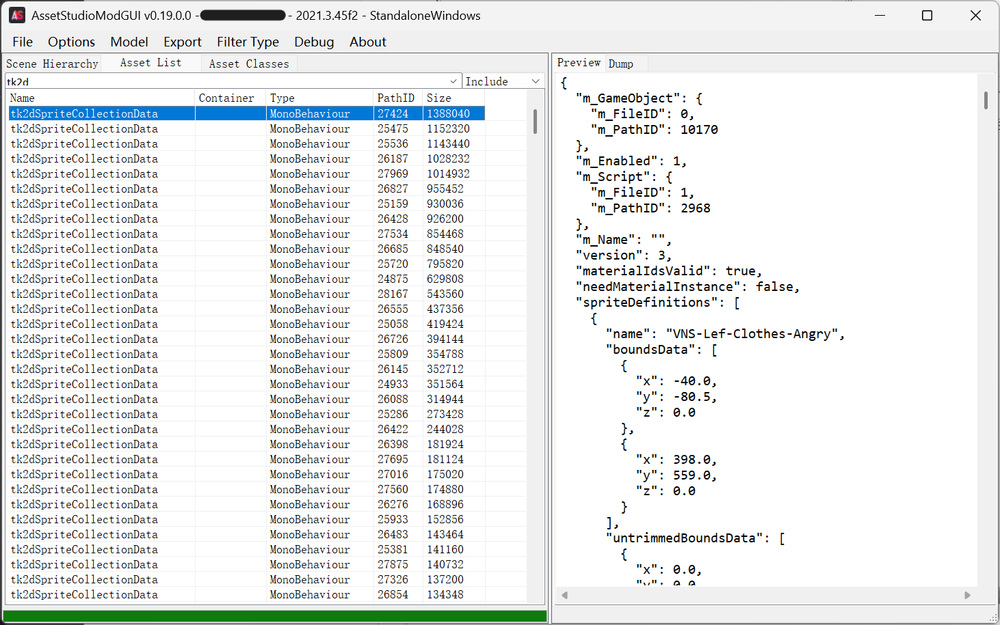
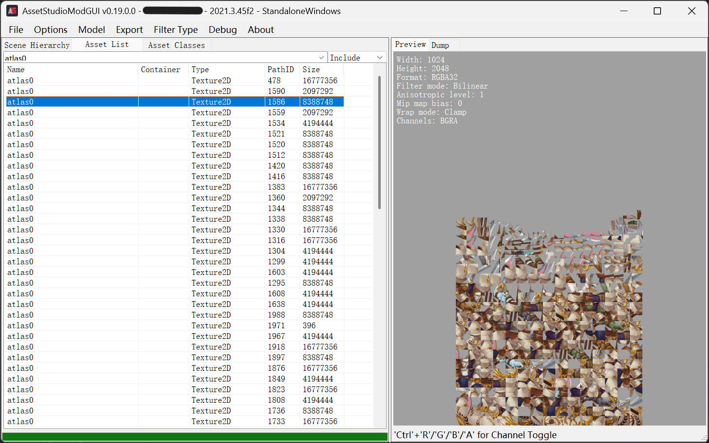
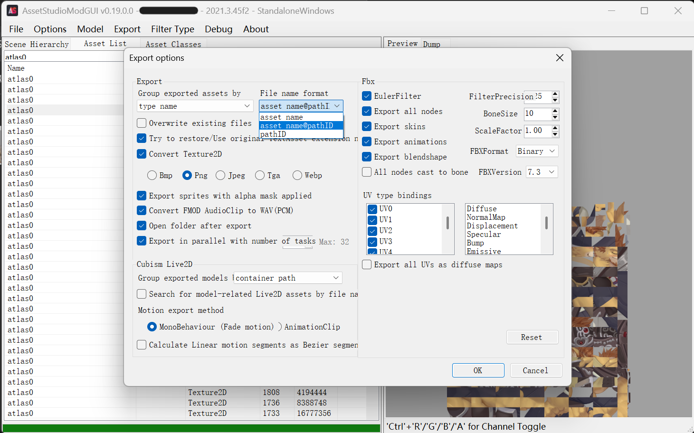
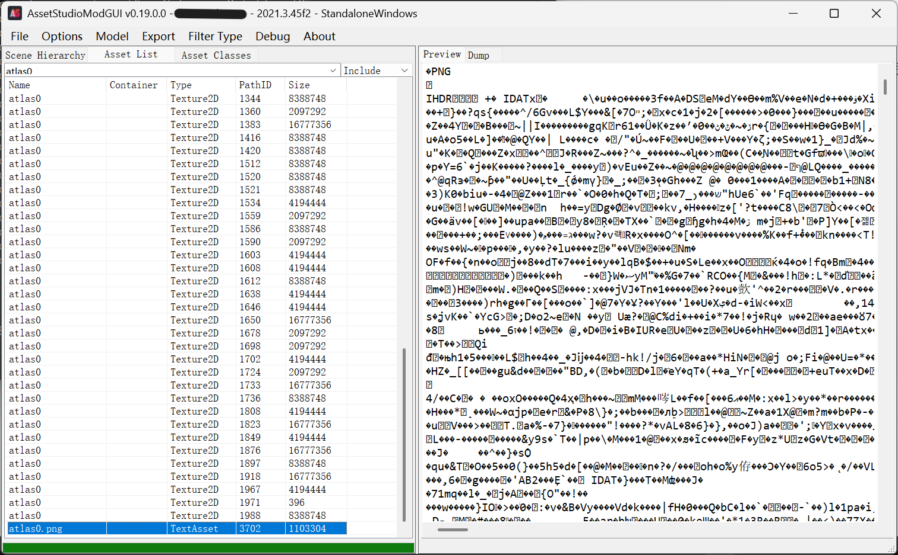
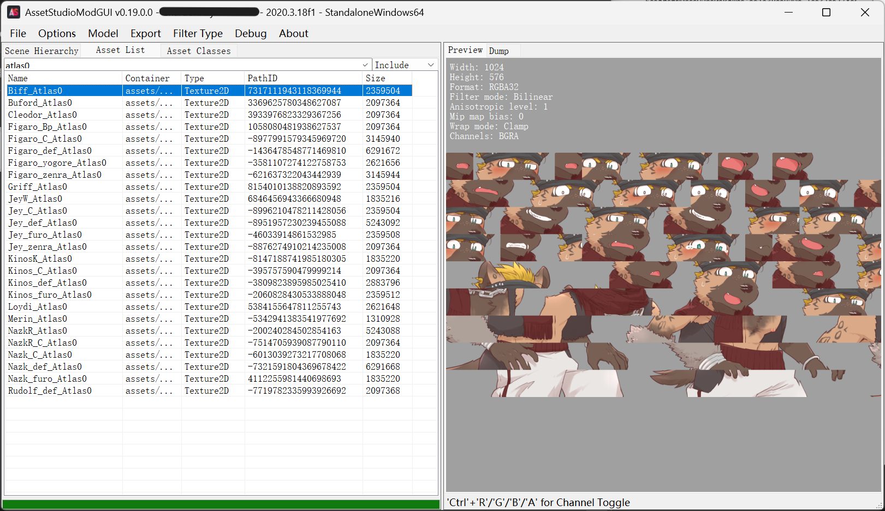
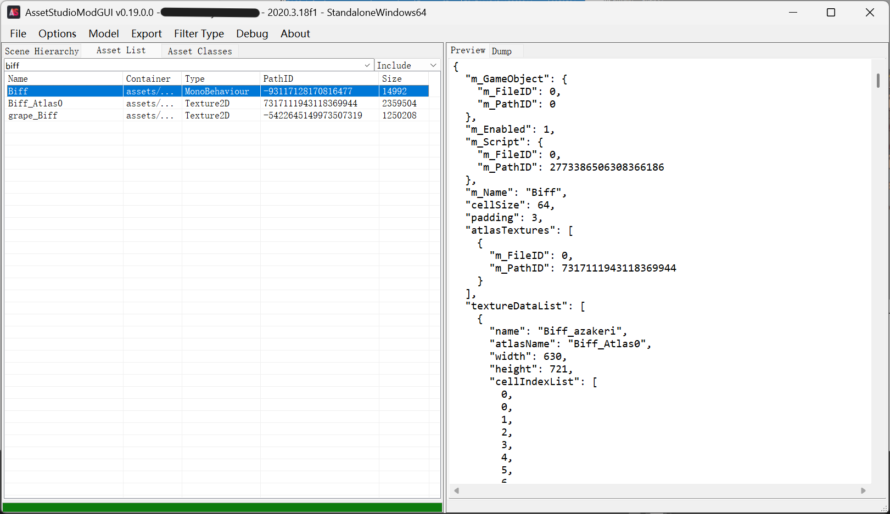

Sprite Atlas技术
几个月不见了又是，忙着处理现实事务的同时，也随便看看 fvn 的发展。
有些游戏掉了队
一些开发周期悠久的游戏（挖坑很久的游戏）为了减小文件体积，会用一个已经停止维护的插件 2D Toolkit，这个插件的作用是将许多相似图片切割，共同部分只存储一份，并在游戏运行时还原为单独的图片。对于只有表情、动作、服装等变化的立绘和同一组CG中极其相似的图片，这种切图方式可以很有效地减少图片资源的体积。
尽管现在的游戏对于空间的限制更宽松了，新游戏有的仍会用这个方案，github上有个 sprite dicing 开源仓库，提供插件和独立程序，对于图片量巨大的游戏仍然能够起到减小资源包体积的作用。
讲完了好处讲讲坏处，坏处就是我们直接用 AssetStudio 打开不能直接看到图片了，只有一堆一堆碎块拼成的大图，名字一般叫 *Atlas，为了看到游戏里真正的图片，我们需要还原这些 Atlas。
找找坐标
找……找对了吗
古法 AI 启动！
把Assembly-Csharp.dll放到 Dnspy 里，交给Deepseek研究图片系统的组成，它非常深刻地径直发现了战斗爆衣系统（×）同时也稍微提到了 Spine 和 Atlas 的部分。爆衣系统虽然很喜闻乐见，但是这不是我们的重点，先行忽略。在深入追问 Spine 之后，成功还原了角色的战斗动画。
示例图片（）看出什么都别说嗷

这种图片其实不在我们讨论的范围，但是既然找到了，就写出来供参考。
以上面的图片Aoba.png为例，这是直接用AssetStudio导出的图片文件，可以看出它由若干小部件组成。同时，在TextAsset文件夹中有相应的aoba.atlas和aoba.txt，且txt实际上是json文件。改名为 json，并将上述三个文件放在一起即可。同样的方法找到其他后缀名为atlas的文件和配套图片、json，全部放在一起备用。
至于观看，在神秘论坛找到一个帖子，是预览 Spine 的查看器，体验了一下效果还不错，该有的功能都不缺，很全面。具体用法参考帖子内说明，此处不再详述。
回到Atlas上吧
Deepseek 从Assembly-Csharp.dll中找到了这里的Atlas们是用tk2d切分的，于是我搜索了一下相关的信息，找到帖子棕色尘埃1拆包求助，虽然在这里没有找到解法，但是知道了tk2d是个啥。
后来在某神秘网站浏览的时候发现一些前辈的相关尝试与代码，下载到了前辈的还原代码，至少有思路了。
1 | import json |
（没有if __name__ == "__main__"看着不得劲×）
只用看前面几行即可，这份代码最大的用处在于告诉了我坐标文件可以在MonoBehaviour中提取，因此我们可以把还原Atlas的重心放在找MonoBehaviour上。对于tk2d，代码中读取的json项都不存在，不能用来还原图像。
AssetStudio
虽然现在提到Unity提取资源都会想到AssetRipper，但实际上AssetStudio还是有继任者的，现在还在更新的继任者有https://github.com/aelurum/AssetStudio，可以多准备几个不同版本，都拿来碰碰运气。
想要在AssetStudio中打开MonoBehaviour时，会弹出选取文件夹的界面，如果Unity游戏是Mono架构，直接选Managed文件夹，否则需要先用Il2cppDumper导出dll后才能读取。运气很好，我研究的游戏因为很古老（新的也用不了tk2d），直接是Mono，很方便地提取出所有资源。
我们尤其关注一下和tk2d有关的东西，首先我们可以假设这些Atlas都是插件自动生成而不是人工操作的，这样生成的文件多少应该带有和tk2d相关的信息。于是在MonoBehaviour中搜索tk2d，巧合的是所有带tk2d的文件都是MonoBehaviour。

和上面偷看Spine一样，优先从最大的文件开始看。既然碎图都被切割得不成样子了，重建步骤相比也是很艰巨。
同样来一张示例图片。

图片上半部分是透明的，因为不需要那么多色块，勉强可以看出不同的面部表情和紫色帽子等，衣服切得比较碎，可能能看出花纹。这种情况下为了定位每一个块，想必需要存储很多很多数据。

大小靠前的全是tk2dSpriteCollectionData，查证了Gemini老师后它说这就是我们需要的坐标文件。前面我们已经导出了所有资源，确认之后发现Atlas图片和这里的Data都是83个文件，初步验证通过。
交给AI？
剩下的工作想必非常简单，让AI读取这些json文件中的坐标，写一份还原的代码即可。但是实际工作中遭遇了各种阻碍（）
全都是atlas0

资源包中所有的图片都叫atlas0，导出的时候有些版本的AssetStudio居然让后导出的覆盖先导出的，好一些的则会添加一个(1)(2)之类，但是仅通过这些不足以确认图片与坐标文件的对应关系。好在从上面坐标文件中可以看到，游戏自己肯定也不是靠文件名定位，有PathID可以唯一地确定一个资源文件。
AssetStudio中可以看到每个文件的PathID，有的版本可以将其加入文件名导出，我们需要这些信息。上面提到的继任者（详见AssetStudio章节）可以在Options里找到导出选项，选中文件名+PathID，再次导出。这次所有的atlas0名字都是atlas0 @xxx.png，能够直接使用了。

代码，来
让gpt大人读取一份坐标文件，并写出对应的代码。我选了一份最小的坐标文件给它分析，节约一下大模型的上下文。
1 | { |
其中texture属性的值为1971，它是一个很小的效果图，因此坐标也很简单，只包含四个positions值。
……然后AI就开始偷懒了，AI直接误以为四个坐标对应矩形的四个角，因此把每个碎块图都当成一整个矩形，进行了简单缩放就输出。可想而知对于一张图中包含很多碎块的图片来说，就根本没有还原。

其实不算完全错，但是只适用于这种简单、没有怎么切碎的图案。显然这张大图可以分割为四个小图，因此按照坐标切开旋转即可。但是对于更多的碎图则完全不适用，毕竟碎图不只是把图片放在一起，同样的碎块为节约空间只需要保存一份，索引信息indices肯定也需要解析的。
因此最后拷打gpt 5.6 sol写了脚本，这次能够正确把所有的小碎块都视为面片拼接了。代码如下。
1 | import json |
不过跑一遍需要一个小时，为了确认代码的有效性，进行了多次尝试，其中辛酸按下不表。总之最后跑出来了，很令人高兴，看到完整的立绘比什么都好。
出了一个错误
虽然看到立绘一个接一个生成很高兴，但是最后检查report发现有一个错误，交给gpt排查一下，很快发现有一个坐标文件和别的不同，它的textures是空的，而将数据藏在了pngTextures里。
1 | "textures": [], |

最后这个atlas0.png就很异常，它的类型是TextAsset，因此预览的结果是一堆乱码，好在从开头的PNG, IHDR等字段可以看出它大概率确实是一个png图片。从导出后的TextAsset文件夹找到它，名字改一改，同样放进Texture2D里，再让gpt适配一下代码，就可以正常解析了。
后续
为了写博客，代码进行了一些重构——原来AI认为直接取四个角放缩即可，后来读取别的坐标文件修正思路，修改代码居然没有去掉原先这个错误操作（）如果没有这篇文章，屎山就堆起来了，一想到没用的分支逐渐堆积……嗯，很可怕。
以及不知道读者看到这里记不记得我提到过atlas0图片和tk2dSpriteCollectionData坐标文件都是83个，但是最后又多出来一个视为TextAsset的碎块图，这样atlas就有84个了。这很奇怪，于是我让AI又写了一份代码，验证每个坐标文件是否仅读取一张图片的PathID，如果确实如此就一一对应上，最后发现最开始提取出的83张图片，有一张并没有和坐标文件对应，其他的能对应上。由此可知，虽然我们小心提取了，但还是不慎多提取了一些无关的资源，好在这并不会对合成图片的结果产生影响。
故事其实还没有结束，自从我会了解析atlas以后，我就不断去找原来没解包出来的碎块游戏（）除去tk2d以外还有另一类，因为没有明显的插件名字，而且分析更为简单，所以就简要讲一下。如果是近几年的新游戏，以下面这种方式制作碎块图可能还居多。
再启新篇
同样先搜索atlas0，这种方案的碎块图名字不叫atlas0了，而是“文件原来的名字”（我猜的），后面跟上_Atlas0。

随便搜索一个文件名，就比如Biff吧。出现的结果里很显然有一个坐标文件，可以大胆猜想坐标文件的名字就是Atlas名字去掉后缀这个_Atlas0。

这个甚至更直白了，直接把字段叫做atlasTextures，非常能够肯定坐标文件和atlas碎块图的对应关系，虽然文件里同样记录了PathID，但实际上只通过文件名都足够判别了。
不过保险起见，我还是让AI改成了使用PathID进行资源定位。前辈的代码处理的也正是这种方式的碎图，只需要进行少量修改即可完美使用。
1 | import json |
AI大人把这种碎块图存储方式叫做cell，上面那种更古老的叫tk2d，大概率是考虑到前辈的变量命名时出现了cellSize等，于是沿用了下来。充分说明了参考的重要性……现代AI还是很谨慎的，对已有代码开启自动跟随不会错。